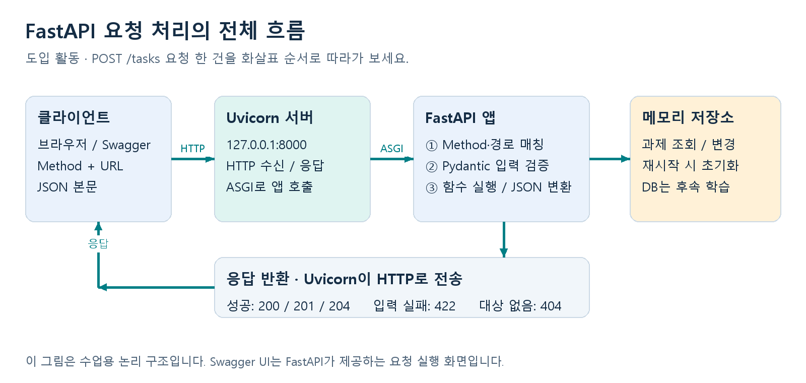
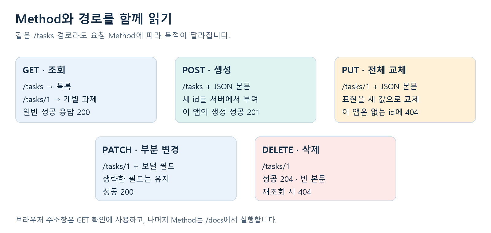
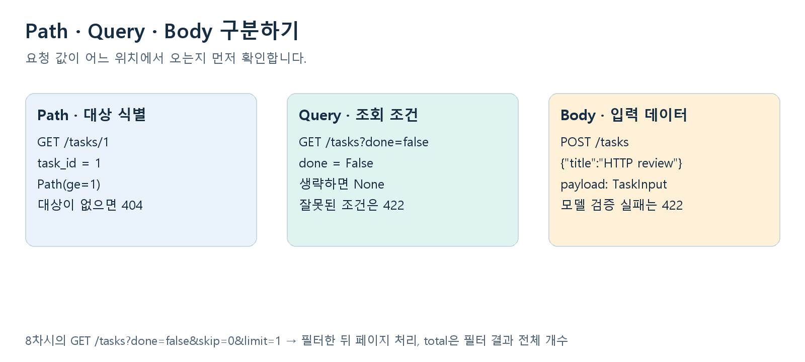
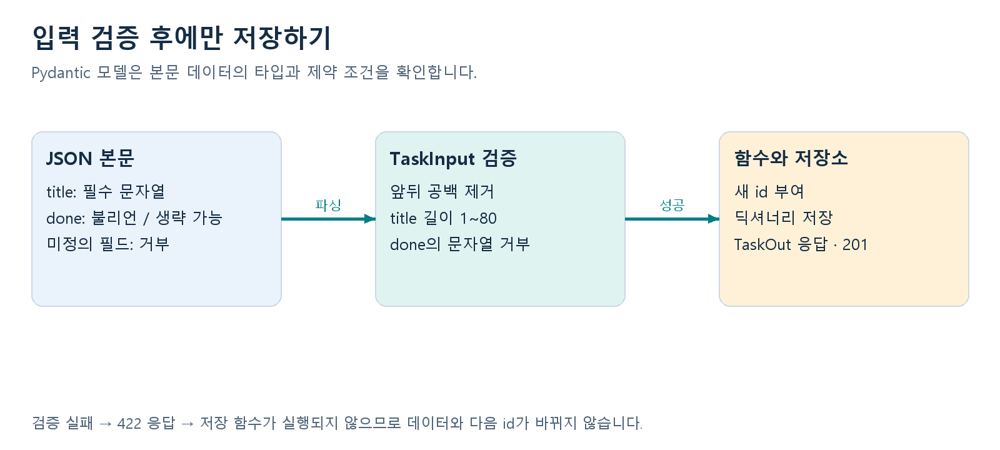
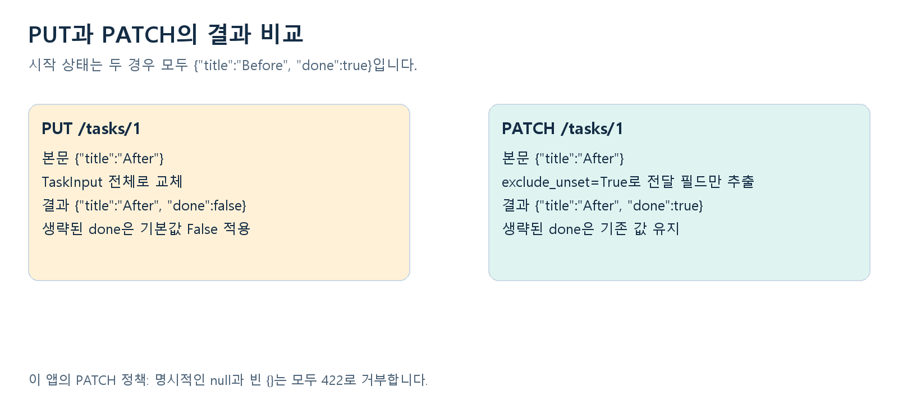
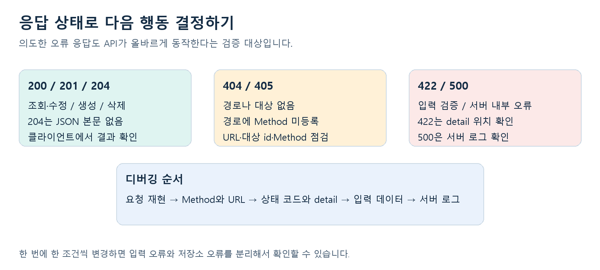
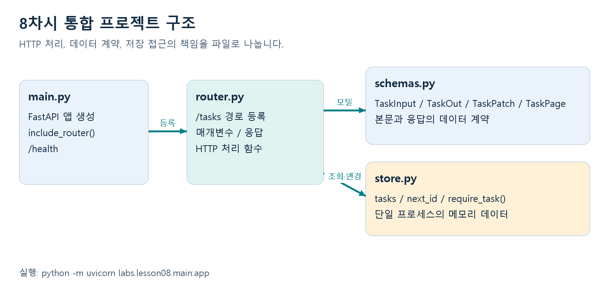

START HERE전체 흐름 먼저 이해하기
Python의 함수·딕셔너리·타입 힌트 기초를 익힌 KDT AI 캠프 입문자를 위한 8차시 수업이다. 차시당 50분, 총 400분으로 구성했다. 모든 차시가 끝나면 로컬 환경에서 학습 과제를 생성·조회·수정·삭제하는 API를 실행하고, 정상 응답과 예상 오류를 직접 검증할 수 있다.

클라이언트 → Uvicorn → FastAPI → 메모리 저장소 → HTTP 응답도입 설명 순서
1. /docs 화면은 클라이언트 역할을 한다. POST /tasks에 title을 담은 JSON을 전송한다.
2. Uvicorn은 8000번 포트에서 HTTP 요청을 받고 ASGI 규약으로 FastAPI 앱을 호출한다.
3. FastAPI는 POST와 /tasks 조합을 찾아 본문을 TaskInput으로 검증한다. 조건에 맞지 않으면 422를 반환한다.
4. 검증을 통과하면 생성 함수가 id를 부여하고 메모리에 과제를 저장한다. 이 수업에서는 AI 추론 대신 과제 데이터로 요청 처리를 익힌다.
5. FastAPI가 응답을 직렬화하고 Uvicorn이 HTTP 상태 201과 JSON을 돌려준다. DELETE 성공은 예외적으로 본문 없는 204다.
8차시 학습 지도
| 차시 | 주제 | 핵심 산출물 |
|---|
| 01 | 설치와 첫 서버 | FastAPI · Uvicorn · /docs |
| 02 | HTTP Method | 같은 경로에 GET · POST |
| 03 | 경로 매개변수 | 개별 조회 · 타입 · 404 |
| 04 | 쿼리 매개변수 | 검색 · 필터 · 페이지 |
| 05 | JSON 본문과 POST | Pydantic · 201 · 입력 검증 |
| 06 | PUT과 PATCH | 교체 · 부분 수정 · null |
| 07 | DELETE와 오류 | 204 · 404 · 405 · 422 |
| 08 | 통합 프로젝트 | APIRouter · CRUD · 자동 테스트 |
WINDOWS + VS CODE설치부터 첫 요청까지 그대로 따라하기
 Windows와 VS Code 설치 및 실행 순서
Windows와 VS Code 설치 및 실행 순서
Windows와 VS Code 준비
기준 환경은 Windows 10 또는 11의 64비트 PC, VS Code, Python 3.12 또는 3.13이다. 이미 둘 중 하나가 설치되어 있으면 그대로 사용한다. 신규 설치는 공식 Windows 다운로드 페이지의 Python 3.13 계열 Windows installer 64-bit를 선택한다. embeddable package와 source archive는 이 수업의 설치 파일이 아니다.
1 Python이 있는지 먼저 확인
Windows 시작 메뉴에서 명령 프롬프트를 열고 아래 두 줄을 따로 입력한다. C:\...> 같은 프롬프트 표시는 입력하지 않는다.
python --version
where python
첫 줄은 Python 3.12.x 또는 Python 3.13.x, 둘째 줄은 실제 python.exe 경로가 나오면 된다. py 명령은 사용하지 않는다. Python 3.14 이상이나 다른 버전만 보이면 3.12/3.13을 선택하거나 추가 설치한다. 수업 검증 버전은 3.12.14와 3.13.12다.
2 Python이 없거나 Microsoft Store가 열리는 경우
Python 공식 사이트 https://www.python.org/downloads/windows/에서 위 조건의 설치 파일을 받는다. 일반 설치 화면에서 Add python.exe to PATH를 체크하고 설치한다. 설치 후 열린 VS Code와 터미널을 모두 종료하고 다시 연 뒤 두 명령을 재확인한다. VS Code에서 인터프리터를 선택하는 것과 Windows PATH 설정은 별개다.
3 VS Code와 Python 확장 설치
VS Code는 https://code.visualstudio.com/에서 설치한다. VS Code의 확장 화면 Ctrl+Shift+X에서 Microsoft가 배포한 Python 확장 ms-python.python과 Python Debugger 확장 ms-python.debugpy를 설치하거나 설치 여부를 확인한다. 프로젝트에는 두 확장 추천 설정이 들어 있다.
Python 설치 화면과 VS Code 버튼 조작은 공식 안내를 바탕으로 작성했다. 이 자료의 자동 검증은 설치된 Python에서 시작하는 명령 실행을 대상으로 한다.
프로젝트 폴더와 터미널 선택
4 압축을 풀고 정확한 폴더 열기
ZIP을 먼저 압축 해제한다. 권장 위치 예시는 C:\001.AI4_202610\fastapi_win_vscode다. VS Code의 File → Open Folder에서 fastapi_win_vscode 폴더 자체를 연다. 상위의 001.AI4_202610 폴더나 labs만 열지 않는다. 이미 받은 예전 자료와 섞지 않고 개정판 폴더를 연다.
fastapi_win_vscode/
.vscode/
labs/
scripts/
tests/
requirements.txt
run.cmd
verify.cmd
왼쪽 탐색기에 requirements.txt, labs, .vscode가 함께 보이면 맞는 폴더다. .venv는 설치 후 생기며 ZIP에는 포함하지 않는다. 본인이 확인한 수업 자료의 작업 공간 신뢰 여부를 묻는 경우 신뢰를 허용해야 실행 설정을 사용할 수 있다.
5 기본 터미널을 Command Prompt로 맞추기
Ctrl+Shift+P → Terminal: Select Default Profile → Command Prompt를 선택한다. 한글 UI에서는 메뉴 명칭이 번역되어 표시될 수 있다. 기존 터미널은 휴지통 버튼으로 닫고 Terminal → New Terminal로 새 터미널을 연다. 새 터미널의 프롬프트가 C:\...> 형식이면 CMD다. PS C:\...> 형식이면 PowerShell이다.
dir
목록에 labs와 requirements.txt가 있어야 한다. 없으면 VS Code에서 올바른 폴더를 다시 연다. 수업의 기본 명령은 CMD 기준이다. 프로젝트에는 새 터미널을 CMD로 여는 설정도 포함되어 있다.
터미널에서 가상환경 직접 만들기
6 CMD에 아래 명령을 한 줄씩 입력
VS Code에서 fastapi_win_vscode 폴더를 열고 CMD 터미널을 사용한다. python --version이 3.12.x 또는 3.13.x인지 먼저 확인한다. .venv가 아직 없는 상태에서 아래 순서로 실행한다.
python --version
python -m venv .venv
.venv\Scripts\activate.bat
python -m pip install -r requirements.txt
python -m pip check
python -m venv .venv는 프로젝트 안에 가상환경을 만든다. activate.bat는 현재 CMD 터미널의 python이 이 환경을 사용하도록 바꾼다. 설치가 끝날 때까지 기다린 뒤 pip check의 No broken requirements found.를 확인한다.
현재 터미널이 사용하는 Python 확인
python -c "import sys; print(sys.executable)"
출력 경로가 현재 프로젝트의 .venv\Scripts\python.exe로 끝나야 한다. 새 CMD 터미널을 열었다면 .venv\Scripts\activate.bat를 다시 입력한다. 가상환경에서 나갈 때는 deactivate를 입력한다.
이미 .venv가 있는 경우
정상적인 환경이라면 생성 명령을 반복할 필요 없이 활성화부터 진행한다. 깨진 환경은 서버를 종료하고 탐색기에서 .venv_old로 이름을 바꾼 뒤 새로 만든다. labs나 개인 코드 파일은 삭제하지 않는다.
PowerShell에서 설치하는 경우
python -m venv .venv
.\.venv\Scripts\python.exe -m pip install -r requirements.txt
.\.venv\Scripts\python.exe -m pip check
PowerShell에서는 가상환경의 Python을 직접 지정한다. Activate.ps1 실행이나 실행 정책 변경 없이 설치할 수 있다. 다음 단계에서 VS Code 인터프리터를 .venv로 선택한다.
VS Code 인터프리터와 첫 서버
7 프로젝트의 Python 선택
Ctrl+Shift+P → Python: Select Interpreter를 실행한다. 목록에서 프로젝트의 .venv를 선택한다. 보이지 않으면 Enter interpreter path → Find에서 fastapi_win_vscode\.venv\Scripts\python.exe를 직접 고른다. Python 파일을 열고 상태 표시줄의 환경을 확인한다. 기존에 고른 다른 프로젝트 환경이 있다면 반드시 다시 선택한다.
8 1차시 서버 실행
run.cmd 1
CMD 터미널에서 실행한다. Uvicorn running on http://127.0.0.1:8000과 Application startup complete 로그가 보이면 브라우저를 연다. 서버가 실행 중인 터미널은 요청을 기다리므로 다음 명령을 입력하지 않고 그대로 둔다.
http://127.0.0.1:8000/
http://127.0.0.1:8000/docs
첫 주소에서 {"message":"Hello FastAPI"}를 확인한다. /docs에서 GET / → Try it out → Execute를 누르고 200을 확인한다. 브라우저의 JSON 키 표시 순서는 달라도 된다.
9 수정 후 재시작과 차시 전환
실행한 터미널을 클릭해 Ctrl+C로 종료한다. lesson01.py의 message를 수정하고 Ctrl+S로 저장한 뒤 run.cmd 1을 다시 실행한다. 새로고침해 응답 변경을 확인한다. 확인 후 원래 코드로 복원한다. 2차시는 종료 후 run.cmd 2, 최종 8차시는 run.cmd 8이다.
실습의 기본 실행은 자동 재시작 옵션 없이 진행한다. VS Code의 Run Python File 삼각형 버튼은 Python 파일 실행 기능이므로 FastAPI 서버를 여는 수업 명령 대신 사용하지 않는다. 서버는 run.cmd 또는 다음 페이지의 전용 F5 구성으로 실행한다.
CMD와 PowerShell 명령 구분
기본 수업은 CMD를 사용한다. PowerShell 터미널을 유지하고 싶다면 현재 폴더의 파일 앞에 .\를 붙인다. 아래 두 묶음을 섞지 않는다. 모든 줄은 fastapi_win_vscode 폴더에서 실행한다.
CMD 기본 명령
python --version
where python
python -m venv .venv
.venv\Scripts\activate.bat
python -m pip install -r requirements.txt
run.cmd 1
verify.cmd
PowerShell 대응 명령
python --version
where.exe python
python -m venv .venv
.\.venv\Scripts\python.exe -m pip install -r requirements.txt
.\run.cmd 1
.\verify.cmd
서버 실행과 검증은 동시에 입력하는 한 묶음이 아니다. run.cmd로 서버를 실행해 실습을 마친 후 Ctrl+C로 종료하고 verify.cmd를 실행한다. 위 목록은 명령 대응표다.
원리를 익히는 수동 명령 CMD
python -m venv .venv
.venv\Scripts\python.exe -m pip install -r requirements.txt
.venv\Scripts\python.exe -m uvicorn labs.lesson01:app
수동 명령은 .venv가 아직 없고 python 버전이 3.12 또는 3.13인 상태에서 환경을 직접 만들 때 사용한다. 이미 가상환경과 패키지를 설치했다면 서버 명령만 실행한다. 이 경로의 Python으로 설치와 실행을 통일한다.
원리를 익히는 수동 명령 PowerShell
.\.venv\Scripts\python.exe -m uvicorn labs.lesson01:app
전체 python.exe 경로를 따옴표로 감싸 실행할 때 CMD는 "C:\실제경로\python.exe" 형식, PowerShell은 & "C:\실제경로\python.exe" 형식이다. 표시한 실제경로는 설명용이므로 그대로 복사하지 않는다.
VS Code 실행 설정과 전체 검증
10 F5로 차시별 실행 선택
기존 서버를 먼저 Ctrl+C로 종료한다. VS Code의 Run and Debug 화면에서 Lesson 01 - FastAPI부터 Lesson 08 - FastAPI 중 해당 구성을 선택하고 F5를 누른다. .vscode/launch.json은 .venv Python으로 uvicorn 모듈을 실행한다. 중지는 Shift+F5다. 코드 수정 후 중지하고 다시 실행한다.
11 명령 팔레트의 작업으로 실행
Ctrl+Shift+P → Tasks: Run Task → FastAPI: Run lesson을 선택하면 차시와 포트를 고를 수 있다. FastAPI: Check environment는 환경 진단, FastAPI: Verify all은 전체 테스트다. 설정 파일은 프로젝트 안에 포함되어 있고 사용자 전역 설정을 직접 수정하지 않는다.
12 서버 종료 후 전체 테스트
verify.cmd
정상 결과는 ENVIRONMENT OK와 88 passed다. 검증된 고정 버전에서는 Starlette가 httpx 기반 TestClient의 향후 변경을 알리는 deprecation 경고 1건을 출력할 수 있다. 실패나 오류와 구분한다. 자신이 실습 중 기본 코드를 바꾼 경우에는 해당 변경이 테스트 기대와 맞는지도 확인한다.
8차시 서버에서 HTTP 시나리오 실행
첫 번째 CMD 터미널에서 run.cmd 8로 서버를 켠다. 두 번째 CMD 터미널을 같은 프로젝트에서 열고 아래 명령을 실행한다. 200·201·204·404·405·422를 확인하며 생성한 과제는 마지막에 삭제한다.
.venv\Scripts\python.exe scripts\http_walkthrough.py
제공된 소스와 tests 폴더로 학생 PC에서도 검증할 수 있다. CMD에서 verify.cmd를 실행해 환경 진단과 88개 테스트 결과를 확인한다. VS Code의 버튼 클릭 자체는 자동 검증하지 않았고, 실행 설정에 지정한 명령은 실제 HTTP 응답으로 검증했다.
차시별 실행 명령 CMD
| 차시 | 실행 명령 |
|---|
| 1 | run.cmd 1 |
| 2 | run.cmd 2 |
| 3 | run.cmd 3 |
| 4 | run.cmd 4 |
| 5 | run.cmd 5 |
| 6 | run.cmd 6 |
| 7 | run.cmd 7 |
| 8 | run.cmd 8 |
PowerShell을 쓸 경우 run.cmd 앞에 .\를 붙인다. 직접 Uvicorn을 실행하려면 프로젝트의 .venv Python으로 -m uvicorn과 위 모듈 경로를 사용한다.
LESSON 01 · 50 MIN1차시 설치와 첫 서버 실행
Python 코드가 HTTP 응답이 되는 순간
도입 그림 8분 → 개념 12분 → 설치와 실행 25분 → 확인 5분
학습 목표
- FastAPI와 Uvicorn의 역할을 구분한다.
- 가상환경에 패키지를 설치하고 서버를 실행한다.
- 루트 경로와 자동 문서에서 첫 응답을 확인한다.
Python 코드가 HTTP 응답이 되는 순간
핵심 이론
API와 클라이언트
API는 다른 프로그램이 기능을 호출하는 약속이다. 브라우저나 클라이언트가 요청을 보내면 서버가 상태 코드와 데이터를 돌려준다. 오늘은 AI 모델을 연결하기 전 단계로, 학습 과제를 관리하는 HTTP API를 만든다.
FastAPI와 Uvicorn
FastAPI는 어떤 경로와 Method를 어떤 Python 함수에 연결할지 정의한다. Uvicorn은 포트를 열고 HTTP 요청을 받아 ASGI 인터페이스로 애플리케이션을 호출하는 서버다. ASGI는 서버와 Python 웹 앱 사이의 호출 규약이다.
가상환경과 실행 경로
가상환경은 프로젝트별 패키지를 분리한다. pip와 uvicorn을 같은 Python으로 실행해야 설치 위치가 어긋나지 않는다. 이 교안은 활성화 스크립트 없이 .venv의 python.exe를 직접 호출한다. 모든 명령은 labs 폴더의 상위 폴더에서 실행한다.
실행 명령 해석
labs.lesson01:app에서 labs.lesson01은 import할 모듈이고 app은 그 안의 FastAPI 객체 이름이다. --reload는 코드 변경을 감지해 개발 서버를 재시작한다. 127.0.0.1은 현재 컴퓨터이고 기본 포트는 8000이다. Python 파일을 직접 실행하는 것만으로 서버가 열리지는 않는다.
실행과 실습 절차
run.cmd 1
위 실행 파일은 아래 Uvicorn 명령과 같은 앱을 실행한다. 두 명령 중 하나만 실행한다. 기본 터미널은 CMD다.
.venv\Scripts\python.exe -m uvicorn labs.lesson01:app
- 환경 확인 · 도입부 Windows와 VS Code 준비 절차를 따른다. VS Code에서 fastapi_win_vscode 폴더를 열고 CMD 터미널의 python --version이 3.12.x 또는 3.13.x인지 확인한다.
- 설치 · CMD에서 python -m venv .venv로 환경을 만들고 .venv\Scripts\activate.bat로 활성화한다. python -m pip install -r requirements.txt와 python -m pip check를 실행한다. VS Code에서 .venv 인터프리터를 선택한 뒤 run.cmd 1을 실행한다.
- 첫 코드 읽기 · labs/lesson01.py를 열어 import, app 생성, @app.get("/"), 반환 딕셔너리를 찾는다. 딕셔너리는 JSON 응답으로 직렬화된다.
- 서버 확인 · http://127.0.0.1:8000/에서 {"message":"Hello FastAPI"}를 확인한다. /docs에서는 GET / → Try it out → Execute를 누르고 상태 200을 확인한다.
- 변경 확인 · message 값을 Hello AI Camp로 바꾸고 저장한다. Ctrl+C로 종료 후 같은 명령으로 서버를 다시 실행하고 브라우저를 새로고침한다. 실습 후 원래 값으로 복원한다. --reload는 선택적인 개발 옵션이며 이 환경의 자동 재시작 검증은 완료하지 못했다.
요청과 기대 응답
기본 데이터에서 시작하고 표의 요청 순서를 따른다. 생성 id는 재시작 없이 추가 요청을 했다면 달라질 수 있으므로 실제 응답 값을 사용한다.
| Method | 경로 | JSON 본문 | 기대 응답 |
|---|
| GET | / | 없음 | 200 · {"message":"Hello FastAPI"} |
차시별 완성 코드
다음 코드는 제공된 실행 파일과 같은 내용이다. 8차시는 파일 4개로 나뉜다. __init__.py는 비어 있는 패키지 표시 파일이다.
labs/lesson01.py
from fastapi import FastAPI
app = FastAPI(title="Lesson 01")
@app.get("/")
def root():
return {"message": "Hello FastAPI"}
직접 해보기
GET /health를 추가해 {"status":"ok"}를 반환하라. 서버 재실행 후 브라우저와 /docs 양쪽에서 확인하라.
이해 확인
Uvicorn과 FastAPI 중 포트를 열고 요청을 받는 것은 무엇인가?
LESSON 02 · 50 MIN2차시 HTTP Method와 기본 라우팅
같은 주소도 Method가 다르면 다른 동작
복습 5분 → 이론 15분 → Method 비교 실습 25분 → 확인 5분
학습 목표
- 요청과 응답의 구성 요소를 읽는다.
- 동일 경로에 GET과 POST를 각각 연결한다.
- 404와 405를 요청의 관점에서 구분한다.

같은 주소도 Method가 다르면 다른 동작
핵심 이론
요청과 응답
요청은 Method, URL, 헤더, 선택적인 본문으로 구성된다. 응답은 상태 코드, 헤더, 선택적인 본문으로 구성된다. JSON은 데이터를 표현하는 형식이며 Python 딕셔너리 자체가 네트워크로 전송되는 것은 아니다.
Method의 의미
GET은 조회, POST는 생성이나 처리를 요청할 때 사용한다. PUT은 대상 표현의 교체, PATCH는 부분 변경, DELETE는 삭제에 사용한다. Method 이름이 데이터 처리를 자동으로 구현하지는 않는다. 실제 동작은 함수 본문으로 구현한다.
라우팅의 기준
이 실습에서 엔드포인트를 구별하는 핵심은 Method와 경로의 조합이다. GET /method와 POST /method는 경로가 같아도 서로 다른 함수를 실행한다. 함수 이름을 바꾸는 것만으로 URL은 바뀌지 않는다.
주소창의 한계
브라우저 주소창은 일반적으로 GET 요청을 만든다. POST, PUT, PATCH, DELETE는 /docs의 실행 기능이나 HTTP 클라이언트를 사용한다. 이번 POST /method는 Method 분기를 관찰하기 위한 데모이며 저장 기능은 5차시에 구현한다.
실행과 실습 절차
run.cmd 2
위 실행 파일은 아래 Uvicorn 명령과 같은 앱을 실행한다. 두 명령 중 하나만 실행한다. 기본 터미널은 CMD다.
.venv\Scripts\python.exe -m uvicorn labs.lesson02:app
- 서버 교체 · 이전 서버를 Ctrl+C로 종료한 뒤 2차시 실행 명령을 입력한다. 두 서버가 같은 포트를 사용하지 않도록 한다.
- GET 요청 · /docs에서 GET /method를 실행한다. 상태 200과 method 값 GET을 기록한다.
- POST 요청 · /docs에서 POST /method를 실행한다. 본문 없이 보내며 상태 201과 method 값 POST를 확인한다.
- Method 오류 · /method에 DELETE를 보내면 405가 된다. 등록된 경로는 있으나 해당 Method를 허용하지 않는 경우다.
- 경로 오류 · /missing에 GET을 보내면 404가 된다. 오타를 수정하고 다시 GET /method를 호출해 비교한다.
요청과 기대 응답
기본 데이터에서 시작하고 표의 요청 순서를 따른다. 생성 id는 재시작 없이 추가 요청을 했다면 달라질 수 있으므로 실제 응답 값을 사용한다.
| Method | 경로 | JSON 본문 | 기대 응답 |
|---|
| GET | /method | 없음 | 200 · {"method":"GET","purpose":"read"} |
| POST | /method | 없음 | 201 · {"method":"POST","purpose":"create"} |
| DELETE | /method | 없음 | 405 |
| GET | /missing | 없음 | 404 |
차시별 완성 코드
다음 코드는 제공된 실행 파일과 같은 내용이다. 8차시는 파일 4개로 나뉜다. __init__.py는 비어 있는 패키지 표시 파일이다.
labs/lesson02.py
from fastapi import FastAPI
app = FastAPI(title="Lesson 02")
@app.get("/method")
def read_method():
return {"method": "GET", "purpose": "read"}
@app.post("/method", status_code=201)
def create_method():
return {"method": "POST", "purpose": "create"}
직접 해보기
GET /camp를 추가하고 camp와 course 필드를 가진 JSON을 반환하라. POST /camp는 아직 등록하지 않고 호출해 상태를 예측하라.
이해 확인
GET /method가 200이면 POST /method도 자동으로 구현되는가?
LESSON 03 · 50 MIN3차시 경로 매개변수와 개별 조회
주소에 담긴 과제 번호를 Python 정수로 받기
복습 5분 → 경로와 검증 15분 → 조회 및 오류 실습 25분 → 확인 5분
학습 목표
- 경로의 변수를 함수 매개변수로 연결한다.
- 타입과 범위를 검증한다.
- 고정 경로의 선언 순서와 404 처리를 설명한다.

주소에 담긴 과제 번호를 Python 정수로 받기
핵심 이론
Path Parameter
/tasks/1의 1은 특정 과제를 식별하는 경로 값이다. @app.get("/tasks/{task_id}")의 이름과 함수 매개변수 이름이 일치해야 한다. int 타입을 선언하면 숫자 문자열을 정수로 변환하고 변환 실패를 검증 오류로 처리한다.
타입과 범위
Annotated[int, Path(ge=1)]은 정수이며 1 이상이라는 조건이다. /tasks/abc와 /tasks/0은 입력 조건에 맞지 않아 422다. /tasks/99는 정수 조건에는 맞지만 저장된 과제가 없어 404다. 입력 검증과 리소스 존재 확인을 구분한다.
선언 순서
라우트는 등록 순서에 따라 매칭될 수 있다. /tasks/stats 같은 고정 경로를 /tasks/{task_id}보다 먼저 선언한다. 반대 순서이면 stats가 정수 task_id로 해석되는 경로에 잡혀 422가 될 수 있다.
예외를 통한 응답
raise HTTPException(status_code=404, detail="Task not found")은 현재 처리를 중단하고 오류 응답을 만든다. 오류 딕셔너리를 그냥 return하면 기본 상태 200으로 나갈 수 있으므로 상태 코드까지 명확히 설정해야 한다.
실행과 실습 절차
run.cmd 3
위 실행 파일은 아래 Uvicorn 명령과 같은 앱을 실행한다. 두 명령 중 하나만 실행한다. 기본 터미널은 CMD다.
.venv\Scripts\python.exe -m uvicorn labs.lesson03:app
- 데이터 확인 · lesson03.py의 tasks 딕셔너리를 읽는다. 키 1과 응답 필드 id 1이 같은 과제를 가리키는지 확인한다.
- 개별 조회 · GET /tasks/1을 실행하고 id, title, done을 확인한다. 응답은 {"id":1,"title":"FastAPI basics","done":false}다.
- 존재 오류 · GET /tasks/99를 실행한다. 404와 {"detail":"Task not found"}를 확인한다.
- 검증 오류 · /tasks/abc와 /tasks/0을 실행한다. 422의 detail 목록에서 loc가 path와 task_id를 가리키는지 찾는다. 상세 오류 문구 전체를 외울 필요는 없다.
- 고정 경로 · GET /tasks/stats가 {"total":1}을 반환하는지 확인한다. 두 라우트의 순서를 잠시 바꾸어 현상을 관찰하고 반드시 복원한다.
요청과 기대 응답
기본 데이터에서 시작하고 표의 요청 순서를 따른다. 생성 id는 재시작 없이 추가 요청을 했다면 달라질 수 있으므로 실제 응답 값을 사용한다.
| Method | 경로 | JSON 본문 | 기대 응답 |
|---|
| GET | /tasks/1 | 없음 | 200 · id=1 |
| GET | /tasks/stats | 없음 | 200 · {"total":1} |
| GET | /tasks/99 | 없음 | 404 · Task not found |
| GET | /tasks/abc | 없음 | 422 |
| GET | /tasks/0 | 없음 | 422 |
차시별 완성 코드
다음 코드는 제공된 실행 파일과 같은 내용이다. 8차시는 파일 4개로 나뉜다. __init__.py는 비어 있는 패키지 표시 파일이다.
labs/lesson03.py
from typing import Annotated
from fastapi import FastAPI, HTTPException, Path
app = FastAPI(title="Lesson 03")
tasks = {1: {"id": 1, "title": "FastAPI basics", "done": False}}
# Fixed paths must be declared before the variable route.
@app.get("/tasks/stats")
def task_stats():
return {"total": len(tasks)}
@app.get("/tasks/{task_id}")
def read_task(task_id: Annotated[int, Path(ge=1)]):
if task_id not in tasks:
raise HTTPException(status_code=404, detail="Task not found")
return tasks[task_id]
직접 해보기
과제 2를 딕셔너리에 추가하고 /tasks/2와 /tasks/stats 응답이 함께 바뀌는지 확인하라.
이해 확인
/tasks/0과 /tasks/99가 서로 다른 상태 코드인 이유는?
LESSON 04 · 50 MIN4차시 쿼리 매개변수와 목록 검색
목록을 필터링하고 필요한 구간만 반환하기
복습 5분 → 쿼리 이론 15분 → 필터와 페이지 실습 25분 → 확인 5분
학습 목표
- Path와 Query의 용도를 구분한다.
- 검색·완료 여부·페이지 조건을 처리한다.
- 필터와 페이지 처리 순서를 구현한다.
목록을 필터링하고 필요한 구간만 반환하기
핵심 이론
Query Parameter
/tasks?q=FastAPI&done=false에서 물음표 뒤는 조회 조건이다. 여러 조건은 &로 연결한다. 경로에 없는 단순 타입 함수 매개변수는 이 예제에서 Query로 받는다. q: str | None = None은 검색어를 생략할 수 있다는 뜻이다.
생략과 false
done을 생략하면 전체 목록, done=false이면 미완료 목록이다. if done:으로만 검사하면 False를 생략과 구분하지 못한다. if done is not None:으로 필터 적용 여부를 판단한다.
필터와 페이지
검색과 완료 여부 필터를 먼저 적용하고 total을 구한다. 그 뒤 skip과 limit으로 결과를 자른다. 따라서 total은 현재 페이지 길이가 아니라 필터를 통과한 전체 개수다. casefold()로 영문 대소문자 차이를 줄인다.
범위 제한
skip은 0 이상, limit은 1부터 20까지다. 제한 조건이 맞지 않으면 422를 반환한다. 결과가 없는 검색은 실패가 아니므로 items=[]와 total=0을 200으로 반환한다. 경로 끝 슬래시 차이는 리다이렉션을 만들 수 있어 문서의 URL을 그대로 사용한다.
실행과 실습 절차
run.cmd 4
위 실행 파일은 아래 Uvicorn 명령과 같은 앱을 실행한다. 두 명령 중 하나만 실행한다. 기본 터미널은 CMD다.
.venv\Scripts\python.exe -m uvicorn labs.lesson04:app
- 기본 조회 · GET /tasks로 3개의 기본 과제를 확인한다. 3차시와 달리 목록 실습용 데이터 3건으로 시작하는 독립 앱이다.
- 검색 · q=FASTapi로 조회하여 id=1 하나가 나오는지 확인한다. 한글이나 공백은 /docs 입력칸을 사용하면 URL 인코딩을 직접 처리하지 않아도 된다.
- 불리언 조건 · done=false를 입력하면 id=1,3이 나온다. done 조건을 제거하면 완료 과제도 포함된다.
- 페이지 · done=false&skip=1&limit=1로 요청한다. items에는 id=3 하나, total은 2가 나오는지 확인한다.
- 경계값 · limit=0, limit=21, skip=-1, done=maybe를 각각 보내 422를 확인한다. q=not-present로 빈 목록과 200을 확인한다.
요청과 기대 응답
기본 데이터에서 시작하고 표의 요청 순서를 따른다. 생성 id는 재시작 없이 추가 요청을 했다면 달라질 수 있으므로 실제 응답 값을 사용한다.
| Method | 경로 | JSON 본문 | 기대 응답 |
|---|
| GET | /tasks | 없음 | 200 · items 3건, total=3 |
| GET | /tasks?q=FASTapi | 없음 | 200 · id=1 |
| GET | /tasks?done=false&skip=1&limit=1 | 없음 | 200 · id=3, total=2 |
| GET | /tasks?limit=21 | 없음 | 422 |
차시별 완성 코드
다음 코드는 제공된 실행 파일과 같은 내용이다. 8차시는 파일 4개로 나뉜다. __init__.py는 비어 있는 패키지 표시 파일이다.
labs/lesson04.py
from typing import Annotated
from fastapi import FastAPI, Query
app = FastAPI(title="Lesson 04")
tasks = [
{"id": 1, "title": "FastAPI basics", "done": False},
{"id": 2, "title": "HTTP methods", "done": True},
{"id": 3, "title": "Python review", "done": False},
]
@app.get("/tasks")
def list_tasks(
q: str | None = None,
done: bool | None = None,
skip: Annotated[int, Query(ge=0)] = 0,
limit: Annotated[int, Query(ge=1, le=20)] = 10,
):
rows = tasks
if q is not None:
rows = [t for t in rows if q.casefold() in t["title"].casefold()]
if done is not None:
rows = [t for t in rows if t["done"] == done]
total = len(rows)
return {"items": rows[skip:skip + limit], "total": total}
직접 해보기
done=true&limit=1을 요청한 뒤 items의 개수와 total을 예측하라. 검색어 Python을 함께 적용하면 어떻게 되는가?
이해 확인
왜 if done is not None을 사용하는가?
LESSON 05 · 50 MIN5차시 POST와 JSON 본문 검증
입력 모델로 새 과제를 안전하게 생성하기
복습 5분 → 모델과 본문 15분 → 생성과 검증 25분 → 확인 5분
학습 목표
- Pydantic 모델로 JSON 입력 구조를 정의한다.
- 생성과 응답 모델을 연결한다.
- 잘못된 본문을 저장하기 전에 차단한다.

입력 모델로 새 과제를 안전하게 생성하기
핵심 이론
Request Body
POST /tasks는 {"title":"HTTP review","done":false} 같은 JSON 본문을 받는다. Pydantic BaseModel을 상속한 TaskInput이 필드 구조를 정의한다. 함수의 payload: TaskInput은 요청 본문으로 해석된다. 본문으로 모델 객체가 만들어진 뒤 함수가 실행된다.
입력 정책
title은 앞뒤 공백을 제거한 후 길이 1~80을 허용한다. done은 생략 시 False이며 strict=True이므로 문자열 "false"를 거부한다. JSON의 false는 불리언, "false"는 문자열이다. extra="forbid"는 id 같은 미정의 입력 필드를 422로 차단한다.
생성과 응답
새 id는 서버가 부여한다. POST 성공은 명시한 201을 반환한다. response_model=TaskOut은 출력 구조를 문서화하고 검증·직렬화한다. 입력 모델과 출력 모델을 분리하면 클라이언트가 서버 소유 id를 임의로 설정하는 것을 막는 설계가 쉬워진다.
메모리 저장
model_dump()로 검증된 모델을 딕셔너리로 바꿔 저장한다. 수업에서는 한 프로세스의 메모리만 사용하므로 재시작이나 reload 시 추가한 데이터가 사라진다. DB와 영속 저장, 여러 사용자 간 동시 쓰기 처리는 후속 주제다.
실행과 실습 절차
run.cmd 5
위 실행 파일은 아래 Uvicorn 명령과 같은 앱을 실행한다. 두 명령 중 하나만 실행한다. 기본 터미널은 CMD다.
.venv\Scripts\python.exe -m uvicorn labs.lesson05:app
- 입력 모델 읽기 · TaskInput과 TaskOut을 비교한다. id는 TaskOut에만 있고 TaskInput의 title은 필수, done은 선택이다.
- 생성 · /docs에서 POST /tasks에 {"title":"HTTP review"}를 넣는다. 기본 상태에서 첫 생성 응답은 {"title":"HTTP review","done":false,"id":2}와 201이다. JSON 키의 출력 순서는 중요하지 않다.
- 생성 결과 조회 · 반환된 id를 GET /tasks/{task_id}에 넣고 같은 데이터를 확인한다. GET /tasks에서도 기존 과제와 새 과제 두 건을 확인한다.
- 검증 실패 · title 누락, 공백만 있는 title, 81자 title, done="false", id 추가를 각각 시험한다. 모두 422이며 목록 개수는 증가하지 않아야 한다.
- 메모리 특성 · 서버를 종료하고 다시 시작한 뒤 목록이 기본 1건으로 돌아오는지 확인한다. 파일 변경에 따른 reload도 같은 초기화를 일으킨다.
요청과 기대 응답
기본 데이터에서 시작하고 표의 요청 순서를 따른다. 생성 id는 재시작 없이 추가 요청을 했다면 달라질 수 있으므로 실제 응답 값을 사용한다.
| Method | 경로 | JSON 본문 | 기대 응답 |
|---|
| POST | /tasks | {"title":"HTTP review"} | 201 · id=2, done=false |
| GET | /tasks/2 | 없음 | 200 · 생성한 과제 |
| POST | /tasks | {"title":" "} | 422 |
| POST | /tasks | {"title":"x","done":"false"} | 422 |
차시별 완성 코드
다음 코드는 제공된 실행 파일과 같은 내용이다. 8차시는 파일 4개로 나뉜다. __init__.py는 비어 있는 패키지 표시 파일이다.
labs/lesson05.py
from typing import Annotated
from fastapi import FastAPI, HTTPException, Path, Response
from pydantic import BaseModel, ConfigDict, Field, field_validator, model_validator
class TaskInput(BaseModel):
model_config = ConfigDict(str_strip_whitespace=True, extra="forbid")
title: str = Field(min_length=1, max_length=80)
done: bool = Field(default=False, strict=True)
class TaskOut(TaskInput):
id: int
app = FastAPI(title="Lesson 05")
tasks = {1: {"id": 1, "title": "FastAPI basics", "done": False}}
next_id = 2
def require_task(task_id: int):
if task_id not in tasks:
raise HTTPException(status_code=404, detail="Task not found")
return tasks[task_id]
@app.get("/tasks", response_model=list[TaskOut])
def list_tasks():
return list(tasks.values())
@app.get("/tasks/{task_id}", response_model=TaskOut)
def read_task(task_id: Annotated[int, Path(ge=1)]):
return require_task(task_id)
@app.post("/tasks", response_model=TaskOut, status_code=201)
def create_task(payload: TaskInput):
global next_id
task = {"id": next_id, **payload.model_dump()}
tasks[next_id] = task
next_id += 1
return task
직접 해보기
정상 JSON을 한 번, 잘못된 JSON을 한 번 보낸 뒤 저장 개수가 얼마나 증가했는지 검증하라.
이해 확인
JSON의 false와 "false"는 같은 타입인가?
LESSON 06 · 50 MIN6차시 PUT과 PATCH로 과제 수정
전체 교체와 부분 변경을 데이터로 비교하기
복습 5분 → PUT과 PATCH 15분 → 순차 요청 비교 25분 → 확인 5분
학습 목표
- PUT과 PATCH의 변경 범위를 구분한다.
- exclude_unset=True의 필요성을 설명한다.
- 생략·명시적 null·빈 본문의 처리 정책을 검증한다.

전체 교체와 부분 변경을 데이터로 비교하기
핵심 이론
PUT 교체
이 앱의 PUT /tasks/{id}는 이미 있는 과제를 TaskInput으로 교체한다. title은 필수이고 done을 생략하면 모델 기본값 False로 바뀐다. 없는 id는 자동 생성하지 않고 404를 반환한다. 이는 수업 API가 정한 계약이다.
PATCH 부분 변경
PATCH는 전달한 필드만 바꾼다. TaskPatch의 필드에 기본값 None을 주어 생략을 허용하고 model_dump(exclude_unset=True)로 실제 전달한 필드만 추출한다. done=False도 명시적으로 전달했다면 반드시 반영한다.
null과 생략 구분
JSON의 null은 필드 자체를 보내지 않은 것과 다르다. 이 앱은 title과 done에 명시적인 null을 허용하지 않는다. field_validator는 실제 전달된 None을 거부한다. 빈 {}는 model_validator가 422로 거부한다. 필드 기본값 None은 생략을 표현하기 위한 내부 값이다.
반복 요청
같은 PUT 요청을 반복하면 리소스의 최종 상태가 같다. 이 예제의 값을 대입하는 PATCH도 같은 상태로 수렴하지만 모든 PATCH가 멱등적인 것은 아니다. 증가 같은 연산을 표현하면 달라질 수 있다. HTTP 의미와 구체적인 API 계약을 함께 읽는다.
실행과 실습 절차
run.cmd 6
위 실행 파일은 아래 Uvicorn 명령과 같은 앱을 실행한다. 두 명령 중 하나만 실행한다. 기본 터미널은 CMD다.
.venv\Scripts\python.exe -m uvicorn labs.lesson06:app
- 부분 변경 · 초기 과제 1에 PATCH {"done":true}를 보낸다. title은 FastAPI basics로 남고 done만 true로 바뀐다.
- 전체 교체 · 같은 과제에 PUT {"title":"Replaced"}를 보낸다. title이 바뀌고 생략된 done이 false로 바뀌는지 확인한다.
- False 전송 · PATCH {"done":true} 다음 PATCH {"done":false}를 실행한다. False가 생략으로 취급되지 않는지 확인한다.
- 변경 검증 · PATCH {}, PATCH {"title":null}, PATCH {"done":null}은 422다. GET으로 이전 데이터가 유지되는지 확인한다.
- 없는 대상 · 유효한 본문으로 PUT /tasks/99와 PATCH /tasks/99를 요청한다. 두 요청 모두 404이며 새 과제는 생기지 않는다.
요청과 기대 응답
기본 데이터에서 시작하고 표의 요청 순서를 따른다. 생성 id는 재시작 없이 추가 요청을 했다면 달라질 수 있으므로 실제 응답 값을 사용한다.
| Method | 경로 | JSON 본문 | 기대 응답 |
|---|
| PATCH | /tasks/1 | {"done":true} | 200 · title 유지 |
| PUT | /tasks/1 | {"title":"Replaced"} | 200 · done=false |
| PATCH | /tasks/1 | {} | 422 |
| PATCH | /tasks/1 | {"done":null} | 422 |
| PUT | /tasks/99 | {"title":"No"} | 404 |
차시별 완성 코드
다음 코드는 제공된 실행 파일과 같은 내용이다. 8차시는 파일 4개로 나뉜다. __init__.py는 비어 있는 패키지 표시 파일이다.
labs/lesson06.py
from typing import Annotated
from fastapi import FastAPI, HTTPException, Path, Response
from pydantic import BaseModel, ConfigDict, Field, field_validator, model_validator
class TaskInput(BaseModel):
model_config = ConfigDict(str_strip_whitespace=True, extra="forbid")
title: str = Field(min_length=1, max_length=80)
done: bool = Field(default=False, strict=True)
class TaskOut(TaskInput):
id: int
app = FastAPI(title="Lesson 06")
tasks = {1: {"id": 1, "title": "FastAPI basics", "done": False}}
next_id = 2
def require_task(task_id: int):
if task_id not in tasks:
raise HTTPException(status_code=404, detail="Task not found")
return tasks[task_id]
@app.get("/tasks", response_model=list[TaskOut])
def list_tasks():
return list(tasks.values())
@app.get("/tasks/{task_id}", response_model=TaskOut)
def read_task(task_id: Annotated[int, Path(ge=1)]):
return require_task(task_id)
@app.post("/tasks", response_model=TaskOut, status_code=201)
def create_task(payload: TaskInput):
global next_id
task = {"id": next_id, **payload.model_dump()}
tasks[next_id] = task
next_id += 1
return task
class TaskPatch(BaseModel):
model_config = ConfigDict(str_strip_whitespace=True, extra="forbid")
title: str | None = Field(default=None, min_length=1, max_length=80)
done: bool | None = Field(default=None, strict=True)
@field_validator("title", "done", mode="before")
@classmethod
def reject_null(cls, value):
if value is None:
raise ValueError("Explicit null is not allowed")
return value
@model_validator(mode="after")
def require_field(self):
if not self.model_fields_set:
raise ValueError("Provide at least one field")
return self
@app.put("/tasks/{task_id}", response_model=TaskOut)
def replace_task(task_id: Annotated[int, Path(ge=1)], payload: TaskInput):
require_task(task_id)
tasks[task_id] = {"id": task_id, **payload.model_dump()}
return tasks[task_id]
@app.patch("/tasks/{task_id}", response_model=TaskOut)
def update_task(task_id: Annotated[int, Path(ge=1)], payload: TaskPatch):
task = require_task(task_id)
task.update(payload.model_dump(exclude_unset=True))
return task
직접 해보기
done=true인 과제에서 PATCH로 title만 바꾼 경우와 PUT으로 title만 보낸 경우를 비교하고 차이를 설명하라.
이해 확인
exclude_unset=True가 done=False를 제거하는가?
LESSON 07 · 50 MIN7차시 DELETE와 상태 코드 디버깅
삭제 성공과 의도된 오류를 구분하기
복습 5분 → 삭제와 상태 15분 → 오류 재현 실습 25분 → 확인 5분
학습 목표
- 204 응답에 본문이 없음을 확인한다.
- 입력·대상·Method 오류를 분류한다.
- 생성부터 삭제까지 상태 변화를 추적한다.

삭제 성공과 의도된 오류를 구분하기
핵심 이론
DELETE의 계약
DELETE /tasks/{id}는 존재하는 과제를 제거한다. 성공 시 204 No Content를 반환하고 JSON을 넣지 않는다. 이 앱은 삭제된 과제를 다시 삭제하면 404를 반환한다. 삭제를 반복해도 대상이 없는 최종 상태는 유지되므로 응답 상태가 달라도 멱등성 설명과 모순되지 않는다.
상태 코드 읽기
200은 조회·수정 성공, 201은 생성 성공, 204는 본문 없는 삭제 성공에 사용한다. 404는 경로나 대상이 없음, 405는 경로에서 허용하지 않는 Method, 422는 경로·쿼리·본문 검증 실패에 사용한다. 500은 예상하지 못한 서버 오류이므로 서버 로그를 확인한다.
입력 실패와 대상 없음
DELETE /tasks/abc는 id 타입이 틀려 422다. DELETE /tasks/99는 유효한 id이나 대상이 없어 404다. 본문도 잘못되고 id도 없다면 어느 오류가 먼저 보일지 임의로 단정하지 않고 한 번에 한 조건씩 바꾸어 재현한다.
식별자와 수명
next_id는 새 과제를 만들 때만 증가한다. 삭제한 번호는 재사용하지 않는다. 재시작하면 메모리와 카운터가 모두 초기화된다. 이 단순 저장소는 단일 학습자의 개발 실습용이며 운영 DB의 트랜잭션이나 동시성 보장을 제공하지 않는다.
실행과 실습 절차
run.cmd 7
위 실행 파일은 아래 Uvicorn 명령과 같은 앱을 실행한다. 두 명령 중 하나만 실행한다. 기본 터미널은 CMD다.
.venv\Scripts\python.exe -m uvicorn labs.lesson07:app
- 대상 생성 · 기본 상태에서 POST /tasks {"title":"Delete me"}로 id=2를 만든다. 실제 반환된 id를 기록한다.
- 삭제 · DELETE /tasks/2를 실행한다. 상태 204와 빈 응답 본문을 확인한다. 성공 응답에 .json()을 호출하면 파싱 오류가 날 수 있으므로 상태와 본문 길이를 확인한다.
- 재조회 · GET /tasks/2와 DELETE /tasks/2를 실행한다. 둘 다 404이며 목록에는 기본 과제만 남는다.
- 번호 확인 · 다시 POST {"title":"Next"}를 보낸다. 재시작하지 않았다면 새 id는 3이다. 삭제한 id=2가 재사용되지 않는다.
- 오류 분류 · GET /missing, POST /tasks/1, DELETE /tasks/abc를 보낸다. 각각 404, 405, 422를 기록하고 원인을 한 문장씩 설명한다.
요청과 기대 응답
기본 데이터에서 시작하고 표의 요청 순서를 따른다. 생성 id는 재시작 없이 추가 요청을 했다면 달라질 수 있으므로 실제 응답 값을 사용한다.
| Method | 경로 | JSON 본문 | 기대 응답 |
|---|
| POST | /tasks | {"title":"Delete me"} | 201 · id=2 |
| DELETE | /tasks/2 | 없음 | 204 · 본문 0바이트 |
| GET | /tasks/2 | 없음 | 404 |
| DELETE | /tasks/abc | 없음 | 422 |
| POST | /tasks/1 | 없음 | 405 |
차시별 완성 코드
다음 코드는 제공된 실행 파일과 같은 내용이다. 8차시는 파일 4개로 나뉜다. __init__.py는 비어 있는 패키지 표시 파일이다.
labs/lesson07.py
from typing import Annotated
from fastapi import FastAPI, HTTPException, Path, Response
from pydantic import BaseModel, ConfigDict, Field, field_validator, model_validator
class TaskInput(BaseModel):
model_config = ConfigDict(str_strip_whitespace=True, extra="forbid")
title: str = Field(min_length=1, max_length=80)
done: bool = Field(default=False, strict=True)
class TaskOut(TaskInput):
id: int
app = FastAPI(title="Lesson 07")
tasks = {1: {"id": 1, "title": "FastAPI basics", "done": False}}
next_id = 2
def require_task(task_id: int):
if task_id not in tasks:
raise HTTPException(status_code=404, detail="Task not found")
return tasks[task_id]
@app.get("/tasks", response_model=list[TaskOut])
def list_tasks():
return list(tasks.values())
@app.get("/tasks/{task_id}", response_model=TaskOut)
def read_task(task_id: Annotated[int, Path(ge=1)]):
return require_task(task_id)
@app.post("/tasks", response_model=TaskOut, status_code=201)
def create_task(payload: TaskInput):
global next_id
task = {"id": next_id, **payload.model_dump()}
tasks[next_id] = task
next_id += 1
return task
class TaskPatch(BaseModel):
model_config = ConfigDict(str_strip_whitespace=True, extra="forbid")
title: str | None = Field(default=None, min_length=1, max_length=80)
done: bool | None = Field(default=None, strict=True)
@field_validator("title", "done", mode="before")
@classmethod
def reject_null(cls, value):
if value is None:
raise ValueError("Explicit null is not allowed")
return value
@model_validator(mode="after")
def require_field(self):
if not self.model_fields_set:
raise ValueError("Provide at least one field")
return self
@app.put("/tasks/{task_id}", response_model=TaskOut)
def replace_task(task_id: Annotated[int, Path(ge=1)], payload: TaskInput):
require_task(task_id)
tasks[task_id] = {"id": task_id, **payload.model_dump()}
return tasks[task_id]
@app.patch("/tasks/{task_id}", response_model=TaskOut)
def update_task(task_id: Annotated[int, Path(ge=1)], payload: TaskPatch):
task = require_task(task_id)
task.update(payload.model_dump(exclude_unset=True))
return task
@app.delete("/tasks/{task_id}", status_code=204)
def delete_task(task_id: Annotated[int, Path(ge=1)]):
require_task(task_id)
del tasks[task_id]
return Response(status_code=204)
직접 해보기
상태 코드 200, 201, 204, 404, 405, 422를 각각 재현하는 요청 한 개씩을 표로 작성하라.
이해 확인
204 응답에 {"message":"deleted"}를 넣어도 되는가?
LESSON 08 · 50 MIN8차시 통합 API와 자동 검증
라우터를 분리하고 전체 CRUD를 끝까지 확인하기
구조 설명 10분 → CRUD 실습 20분 → 자동 검증 15분 → 발표 5분
학습 목표
- APIRouter로 엔드포인트를 모듈화한다.
- 전체 CRUD 시나리오를 독립 상태에서 재현한다.
- 테스트 통과의 범위와 메모리 저장 한계를 설명한다.

라우터를 분리하고 전체 CRUD를 끝까지 확인하기
핵심 이론
모듈별 책임
main.py는 앱 생성과 라우터 등록, router.py는 HTTP 입출력과 경로, schemas.py는 데이터 계약, store.py는 메모리 접근을 맡는다. APIRouter(prefix="/tasks")의 빈 경로 ""는 최종적으로 /tasks가 된다. 파일 경로와 HTTP 경로는 다른 개념이다.
상대 import
from .router import router의 점은 같은 패키지를 가리킨다. 프로젝트 루트에서 python -m uvicorn labs.lesson08.main:app으로 실행해야 패키지 경로가 해석된다. lesson08 폴더 안에서 main.py를 직접 실행하지 않는다.
자동 테스트
TestClient는 TCP 포트를 열지 않고 앱에 요청을 보내며 status_code와 json을 검증한다. 각 테스트 전에 모듈과 저장소를 초기화해 이전 테스트의 생성·삭제가 다음 결과에 영향을 주지 않게 한다. 별도 테스트는 Uvicorn 프로세스를 실제로 띄워 HTTP로 OpenAPI를 요청한다.
AI 서비스로 확장
이번 산출물은 모델 추론 전 단계의 API 기초다. 이후 POST /predict에 입력 스키마와 추론 함수를 연결할 수 있다. 시간이 오래 걸리는 작업은 타임아웃, 비동기 I/O, 작업 큐와 별도로 학습한다. async def만 붙인다고 CPU 추론이 자동으로 빨라지지는 않는다.
실행과 실습 절차
run.cmd 8
위 실행 파일은 아래 Uvicorn 명령과 같은 앱을 실행한다. 두 명령 중 하나만 실행한다. 기본 터미널은 CMD다.
.venv\Scripts\python.exe -m uvicorn labs.lesson08.main:app
- 통합 실행 · 8차시 명령으로 서버를 실행하고 GET /health의 {"status":"ok"}와 /docs의 tasks 그룹을 확인한다.
- CRUD 완주 · POST {"title":"Final task"} → GET 해당 id → PATCH {"done":true} → PUT {"title":"Replaced"} → DELETE 해당 id → GET 404 순서로 실행한다. 각 상태를 기록한다.
- 검색 통합 · 새 과제를 두 건 추가하고 GET /tasks?q=FastAPI&done=false&skip=0&limit=1을 실행한다. items와 total을 구분한다. 8차시의 목록은 다시 items/total 구조다.
- 자동 검증 · 서버를 종료한 뒤 CMD에서 verify.cmd를 실행한다. ENVIRONMENT OK와 88 passed를 확인한다. tests에는 앱 내부 요청과 8개 앱의 실제 Uvicorn HTTP 요청이 포함되어 있다. --reload 변경 반영은 자동 검증에서 제외했다.
- 결과 설명 · 테스트에서 검증한 조건과 운영 서비스에서 추가로 필요한 DB·인증·동시성·부하 검증을 구분해 발표한다. requirements.txt와 실행 명령을 함께 제출한다.
요청과 기대 응답
기본 데이터에서 시작하고 표의 요청 순서를 따른다. 생성 id는 재시작 없이 추가 요청을 했다면 달라질 수 있으므로 실제 응답 값을 사용한다.
| Method | 경로 | JSON 본문 | 기대 응답 |
|---|
| GET | /health | 없음 | 200 · {"status":"ok"} |
| POST | /tasks | {"title":"Final task"} | 201 · 생성 id 기록 |
| PATCH | /tasks/{반환 id} | {"done":true} | 200 · done=true |
| DELETE | /tasks/{반환 id} | 없음 | 204 |
| GET | /tasks/{삭제 id} | 없음 | 404 |
차시별 완성 코드
다음 코드는 제공된 실행 파일과 같은 내용이다. 8차시는 파일 4개로 나뉜다. __init__.py는 비어 있는 패키지 표시 파일이다.
labs/lesson08/main.py
from fastapi import FastAPI
from .router import router
app = FastAPI(title="AI Camp Task API", version="1.0.0")
app.include_router(router)
@app.get("/health", tags=["system"])
def health():
return {"status": "ok"}
labs/lesson08/schemas.py
from pydantic import BaseModel, ConfigDict, Field, field_validator, model_validator
class TaskInput(BaseModel):
model_config = ConfigDict(str_strip_whitespace=True, extra="forbid")
title: str = Field(min_length=1, max_length=80)
done: bool = Field(default=False, strict=True)
class TaskOut(TaskInput):
id: int
class TaskPage(BaseModel):
items: list[TaskOut]
total: int
class TaskPatch(BaseModel):
model_config = ConfigDict(str_strip_whitespace=True, extra="forbid")
title: str | None = Field(default=None, min_length=1, max_length=80)
done: bool | None = Field(default=None, strict=True)
@field_validator("title", "done", mode="before")
@classmethod
def reject_null(cls, value):
if value is None:
raise ValueError("Explicit null is not allowed")
return value
@model_validator(mode="after")
def require_field(self):
if not self.model_fields_set:
raise ValueError("Provide at least one field")
return self
labs/lesson08/store.py
from fastapi import HTTPException
# In-memory teaching store: use one worker; restart resets all data.
tasks = {1: {"id": 1, "title": "FastAPI basics", "done": False}}
next_id = 2
def require_task(task_id: int):
if task_id not in tasks:
raise HTTPException(status_code=404, detail="Task not found")
return tasks[task_id]
def create_task(data: dict):
global next_id
task = {"id": next_id, **data}
tasks[next_id] = task
next_id += 1
return task
labs/lesson08/router.py
from typing import Annotated
from fastapi import APIRouter, Path, Query, Response
from . import store
from .schemas import TaskInput, TaskOut, TaskPage, TaskPatch
router = APIRouter(prefix="/tasks", tags=["tasks"])
@router.get("", response_model=TaskPage)
def list_tasks(
q: str | None = None,
done: bool | None = None,
skip: Annotated[int, Query(ge=0)] = 0,
limit: Annotated[int, Query(ge=1, le=20)] = 10,
):
rows = list(store.tasks.values())
if q is not None:
rows = [t for t in rows if q.casefold() in t["title"].casefold()]
if done is not None:
rows = [t for t in rows if t["done"] == done]
return {"items": rows[skip:skip + limit], "total": len(rows)}
@router.get("/{task_id}", response_model=TaskOut)
def read_task(task_id: Annotated[int, Path(ge=1)]):
return store.require_task(task_id)
@router.post("", response_model=TaskOut, status_code=201)
def create_task(payload: TaskInput):
return store.create_task(payload.model_dump())
@router.put("/{task_id}", response_model=TaskOut)
def replace_task(task_id: Annotated[int, Path(ge=1)], payload: TaskInput):
store.require_task(task_id)
store.tasks[task_id] = {"id": task_id, **payload.model_dump()}
return store.tasks[task_id]
@router.patch("/{task_id}", response_model=TaskOut)
def update_task(task_id: Annotated[int, Path(ge=1)], payload: TaskPatch):
task = store.require_task(task_id)
task.update(payload.model_dump(exclude_unset=True))
return task
@router.delete("/{task_id}", status_code=204)
def delete_task(task_id: Annotated[int, Path(ge=1)]):
store.require_task(task_id)
del store.tasks[task_id]
return Response(status_code=204)
직접 해보기
팀별로 정상 CRUD와 실패 사례 3개를 시연하고 Method, URL, 본문, 기대 상태, 실제 상태를 기록하라. 검증 후 자동 테스트를 실행하라.
이해 확인
TestClient만 통과하면 Uvicorn 실행 명령과 포트 연결까지 검증된 것인가?
VERIFIED실행 검증과 제출 기준
Windows에서 Python 3.12.14와 3.13.12로 동일한 88개 테스트를 각각 실행해 모두 통과했다. 실패 0건, 오류 0건이다. Python 3.13의 독립 가상환경에서 패키지 설치와 실행을 확인했다. CMD와 PowerShell의 run.cmd 실행, VS Code launch 구성 8개와 task에 지정한 명령의 실제 HTTP 응답도 검증했다. VS Code GUI의 클릭 조작은 자동화하지 않았다. --reload 변경 반영은 이 환경의 프로세스 교체 제한으로 제외하고 수동 재시작을 기본으로 한다.
.\.venv\Scripts\python.exe -m pytest -q
검증용 테스트는 tests 폴더에 포함되어 있다. CMD에서 verify.cmd로 직접 확인할 수 있다.
| 검증 영역 | 확인 내용 |
|---|
| 환경 | Python 및 설치 패키지 버전 기록 |
| 기본 실행 | 1~8차시 OpenAPI와 /docs 응답 |
| 입력 검증 | 타입·범위·공백 제목·미정의 필드·명시적 null |
| 상태와 데이터 | 200 / 201 / 204 / 404 / 405 / 422, 데이터 유지와 변경 |
| 실제 서버 | Uvicorn 앱 8개 실행 및 TCP HTTP 요청 |
| 자동 재시작 | 환경 제한으로 제외 · 기본 실습은 수동 재시작 |
검증 로그에는 Starlette가 httpx 기반 TestClient의 향후 사용 변경을 알리는 deprecation 경고 1건이 있다. 현재 고정 버전의 테스트는 모두 통과한다. 다음 교육 배포에서 의존성 버전을 바꿀 때에는 테스트 클라이언트 호환성을 다시 검증한다.
최종 평가 100점
| 평가 영역 | 배점 | 통과 행동 |
|---|
| 설치와 서버 실행 | 20 | 독립 환경 설치, /docs 접속 |
| 라우팅과 조회 | 20 | Method·Path·Query 구분 |
| 생성과 검증 | 20 | 정상 201, 잘못된 입력 422 |
| 수정과 삭제 | 20 | PUT/PATCH 차이, 204와 재조회 404 |
| 테스트와 설명 | 20 | 자동 테스트 실행, 저장 한계 설명 |
막혔을 때 확인하기
python을 찾지 못하거나 Store가 열림
Python 설치와 PATH를 확인한다. 설치 후 VS Code 전체를 종료하고 다시 연다. CMD에서 where python으로 실제 경로를 확인하고, 필요한 경우 CMD에서 실제 python.exe 경로를 따옴표로 감싸 -m venv .venv를 실행한다. py 실행기는 필요하지 않다.
requirements.txt를 찾지 못함
압축을 먼저 풀고 labs와 requirements.txt가 함께 있는 fastapi_win_vscode 폴더를 VS Code로 연다. CMD에서 dir로 확인한 뒤 가상환경 생성과 패키지 설치 명령을 실행한다.
지원하지 않는 Python 버전
python --version이 3.12.x 또는 3.13.x인지 확인한다. 여러 버전이 설치되어 있으면 사용할 버전의 python.exe 전체 경로로 -m venv .venv를 실행한다. 최신이라는 이유만으로 다른 주 버전을 선택하지 않는다.
가상환경 생성 또는 패키지 설치 실패
처음 나온 오류부터 확인한다. Python 버전, 네트워크·프록시·폴더 권한·디스크 공간을 확인한다. 정상 .venv가 있으면 활성화 후 설치 명령만 다시 실행한다. 깨진 .venv는 이름을 바꿔 보존한 뒤 새로 만든다.
Python import에 빨간 밑줄이 보임
패키지 설치와 pip check가 정상 종료됐는지 확인한 뒤 Python: Select Interpreter에서 이 프로젝트의 .venv\Scripts\python.exe를 선택한다. VS Code에서 선택한 환경과 Windows의 기본 python은 다를 수 있다.
포트 8000을 사용할 수 없음
실행 중인 다른 수업 서버를 Ctrl+C 또는 Shift+F5로 종료한다. 종료할 수 없다면 CMD에서 run.cmd 1 --port 8001로 실행하고 브라우저도 http://127.0.0.1:8001/docs를 연다. Tasks: Run Task에서도 포트를 바꿀 수 있다.
서버가 실행되자 터미널이 멈춘 것처럼 보임
정상적으로 요청을 기다리는 상태일 수 있다. 브라우저에서 /docs를 연다. 명령을 추가로 입력할 때는 새 터미널을 쓰고, 서버 종료는 해당 터미널의 Ctrl+C로 한다.
앱을 import하지 못하거나 Python 파일 실행만 끝남
프로젝트 폴더를 바로 열고 run.cmd의 차시 번호를 사용한다. 수동 실행 시 labs.lesson08.main:app 같은 모듈 경로를 정확히 쓴다. FastAPI 파일 자체를 Run Python File로 실행하면 서버가 시작되지 않는다.
POST 요청 또는 JSON 응답이 예상과 다름
POST·PUT·PATCH·DELETE는 /docs에서 Method를 고르고 실행한다. 204 삭제 성공은 빈 본문이므로 JSON 파싱을 하지 않는다. 경로와 타입 오류는 404·405·422를 구분해서 읽는다.
저장한 과제가 사라지거나 docs가 열리지 않음
재시작하면 메모리 데이터가 기본 상태로 돌아온다. /docs의 외부 CDN 리소스가 차단된 환경에서는 /openapi.json이나 제공된 HTTP 시나리오와 테스트로 API를 확인한다. --reload 변경 반영은 검증 범위에서 제외하고 수동 재시작을 사용한다.
공식 문서와 추가 학습
기술 동작은 아래 공식 문서를 참고했고, 수업 API의 입력·응답 정책과 예제는 이 교안의 학습 목적에 맞춰 설계했다. 문서 확인일은 2026년 10월 20일이다. 먼저 교안의 고정 버전으로 재현한 뒤 최신 버전으로 확장한다.